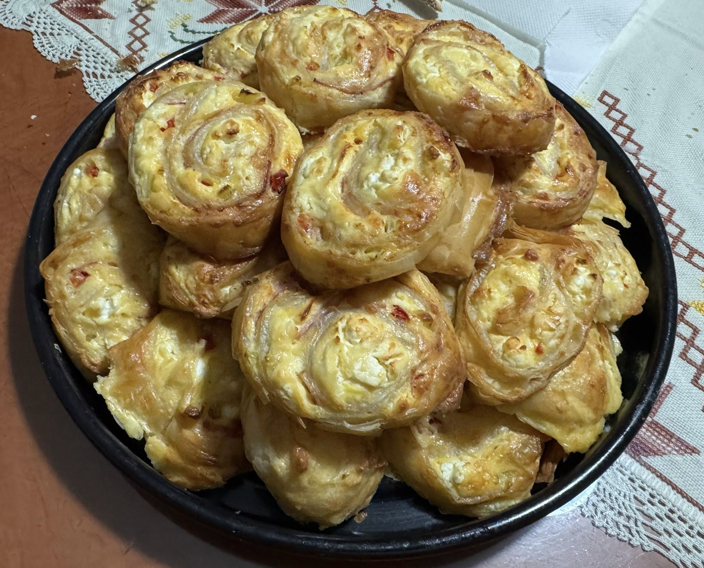

Home
Tyropitakia: Flaky Greek Cheese Meze

Description
Tyropitakia are bite-sized Greek pastries filled with a savory
blend of cheeses, traditionally feta and sometimes mixed with
creamy ricotta or anthotyro. Wrapped in golden, flaky phyllo
or tender dough, these little pies are crisp on the outside
and rich and tangy on the inside. Perfect as a snack,
appetizer, or part of a meze spread, tyropitakia are a
beloved staple of Greek cuisine—simple, satisfying, and
bursting with Mediterranean flavor.
Ingredients
- 1 pack of Fyllo Aeros
- 4 eggs
- 400 g of feta cheese
- 100 - 250 g of butter
- 1-2 bell peppers
- Salt and pepper
Steps
- Take the feta cheese and crumble it
- Beat the eggs and mix them with the feta cheese
- Melt 100 g of the butter. You can use more if it is required
- Take a sheet of the fyllo and with a basting brush cover it with the
melted butter
- Repeat the process so in the end you have 5 sheets
- Cover the sheets with the egg and feta mixture and spread it evenly
throughout the whole surface of the fylo
- Julienne the green pepper
- Put the pepper strips vertically along the surface
- Roll the sheets and then cut them so you have 15-16 rolls
- Bake at 200 degrees celcius
- Enjoy